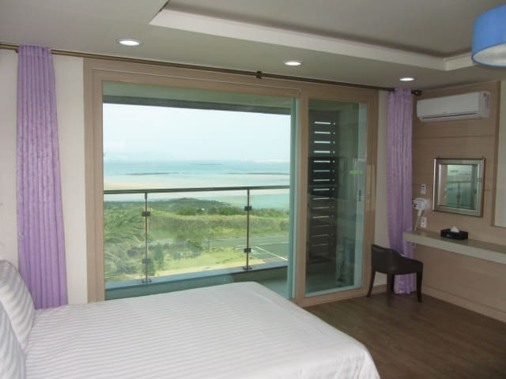
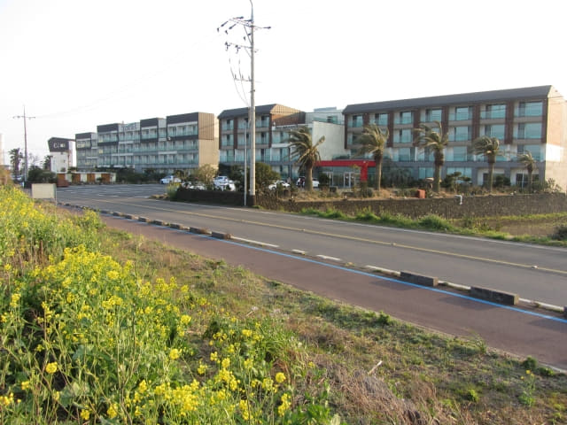
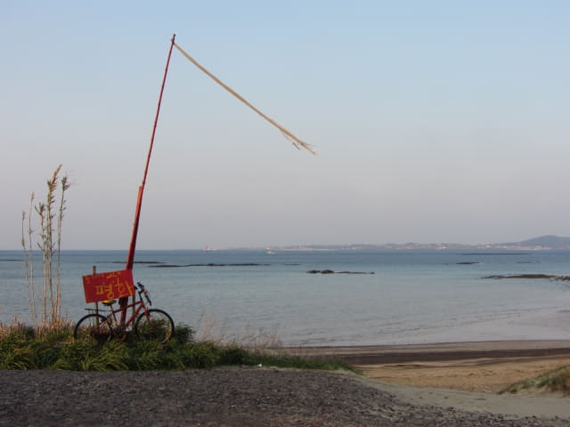

城山美麗度假村的房間非常寬敞舒適, 可看到無敵大海景, 很有渡假的感覺。看見環境那麼優美, 那麼舒適, 接著是什麼行程也不重要了, 留在房間休息, 已經是一個最佳的節目。過去幾天的行程也頗為緊湊, 今天就放鬆心情, 好好享受吧!

在房間休息了兩個鐘, 真是十分舒服。
於下午五時四十分再走出美麗度假村, 欣賞城山邑日出海岸的黃昏景色, 順便找地方吃晚餐。
首先走到美麗度假村對出的日出海岸逛逛。

黃昏時分, 所有景物都塗上淡淡的橙色, 十分柔和。
一望無際的大海, 令人心曠神怡。
景色真是很美, 可看到海中的長長的牛島, 據說由於形狀很像一頭臥牛伸著頭的樣子, 因而得名, 如天公造美, 我們明天便乘船往那裡遠足。
在城山到處都可以看到的城山日出峰。
在美麗度假村對出的日出海岸流連了一會, 接著沿海邊步道朝來時下車的巴士站那方向走, 看看沿途有沒有合適的餐廳吃晚飯。
經過幾棟度假村, 設計和我們下榻的美麗度假村都差不多, 會否是同一個集團經營的?
最外的一棟度假村是 FOUR GRACES RESORT, 裡面有一間 7-11 便利店, 這一區的度假村內好像只有兩間便利店, 另一間的名稱不太熟悉, 所以一般旅客都是去 7-11 便利店買東西。
FOUR GRACES RESORT 內的 7-11 便利店, 附設了很多餐桌和椅子, 方便在這裡進食。可以一邊看無敵海景, 一邊吃東西, 環境真是不錯! 可惜現在大部份旅客只不停低頭注視手中的小小屏幕, 忽略了四周的美景。
繼續沿日出海岸走。地上拖著我們長長的影子, 太陽快下山了, 一天的日子又快過去。

漁船都陸續歸家。